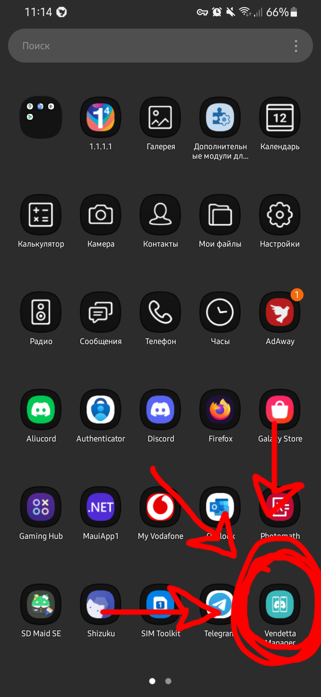
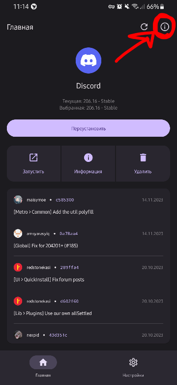
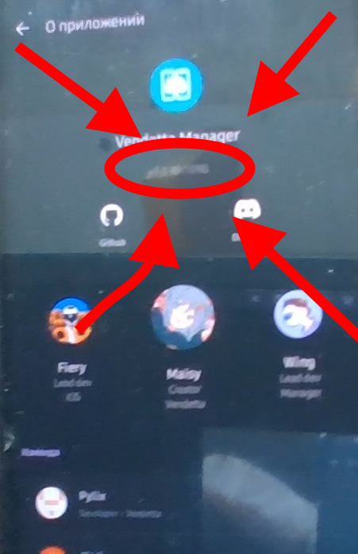
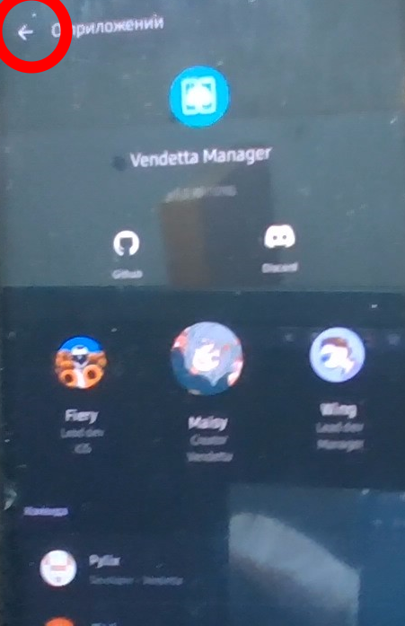
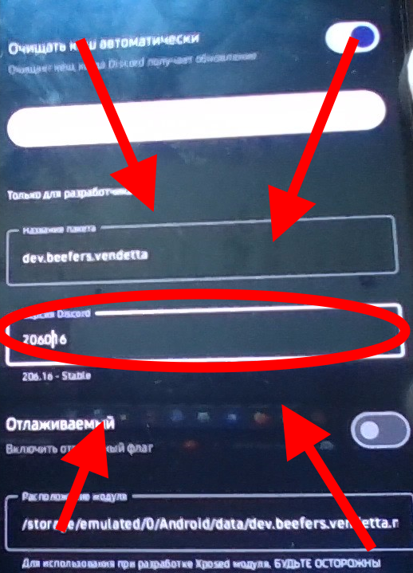
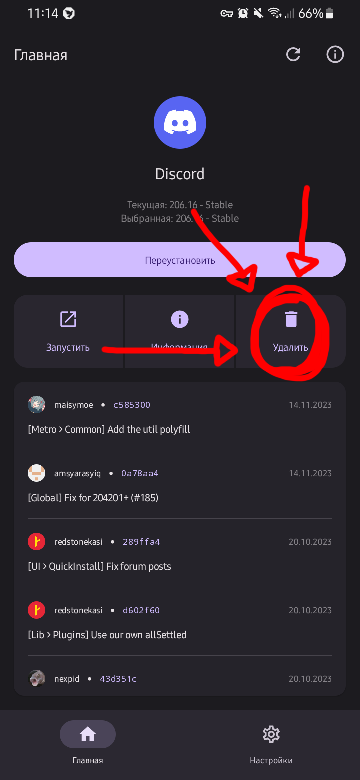
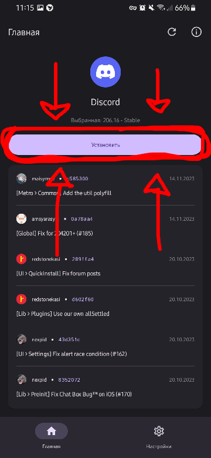

DEFINITVE GUIDE HOW TO DOWNGRADE VENDETTA
1. open vendetta manager
look for vendetta manager shortcut in your app menu or whatever you have apps

2. enable developer settings
2.1. look for (i) button

2.2. tap on version label 10 times

3. set version to downgrade to
3.1. tap on back button

3.2. tap on settings

3.3. scroll down and enter version you want to install in "Discord Version" box
⚠⚠⚠ attentin ⚠⚠⚠:
you enter version not in XXX.xx format, but instead in XXXwxx:
XXX = major version;
w = branch: 0 - stable, 1 - beta, 2 - alpha;
xx = minor version;
for example: 206.16 (stable) = 206016; 205.15 (stable) = 205015; etc.

4. reinstall vendetta
you probly want to install cloudsync plugin to save all your plugins and themes and then load them when you reinstall detta
4.1. go back to home

4.2. tap on uninstall, confirm that you want to uninstall and wait till it uninstalls

4.3. tap on install and wait till it finishes installing

AND NOW YOU SUCCESSFULLY DOWNGRADED YOUR VENDETTA!!!!!11!!!